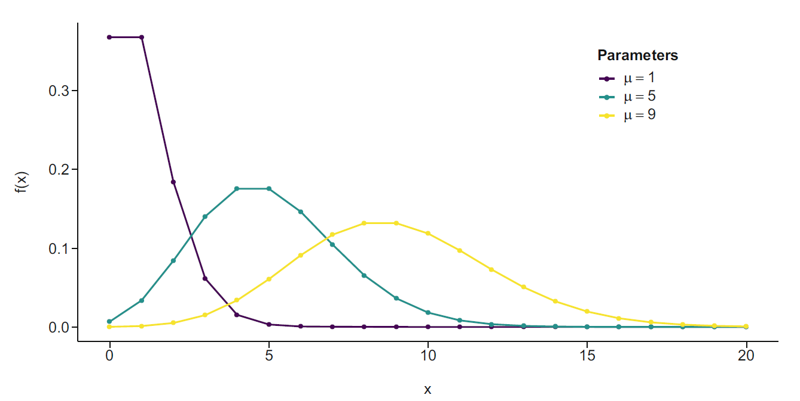
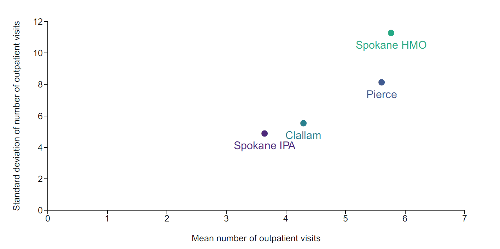
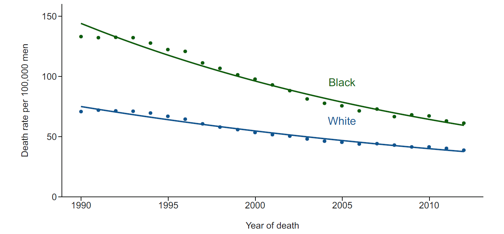
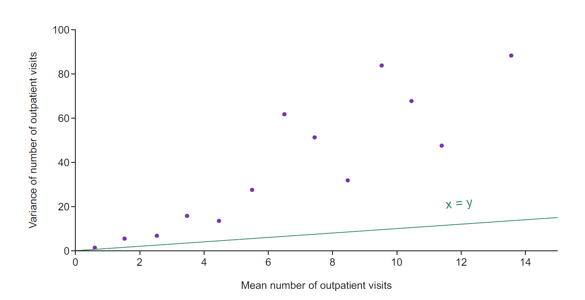
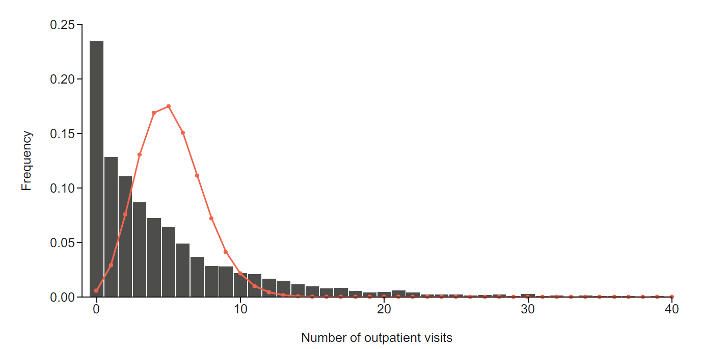
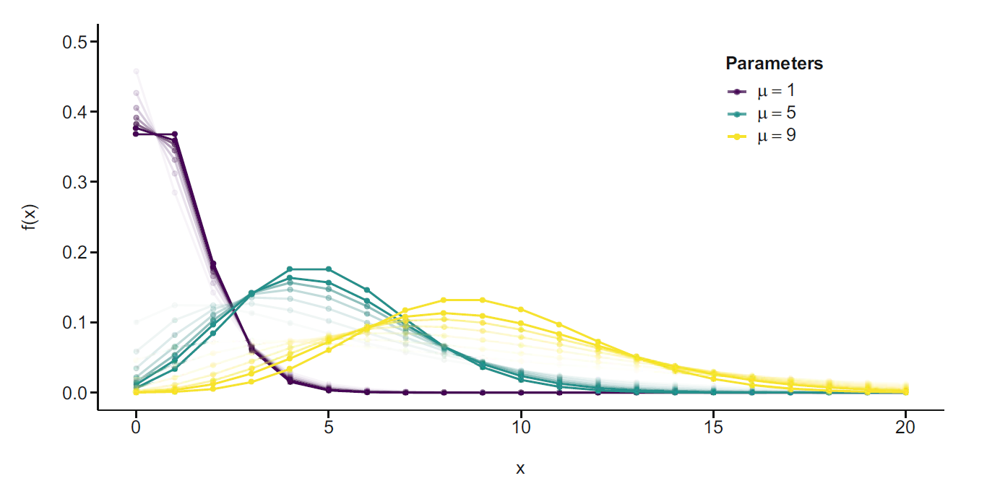

보건의료 자료에서는 일정 기간 동안 발생한 입원 횟수, 외래 방문 횟수, 검사 횟수, 처방 횟수, 특정 지역의 질병 발생 건수와 사망자 수처럼 사건의 누적 횟수를 결과변수로 사용하는 경우가 많다. 이러한 결과를 계수형 결과(count outcome)라고 한다.
계수형 자료는 다음과 같은 특징을 가진다.
값이 \(0,1,2,\ldots\)의 음이 아닌 정수로 제한된다.
평균이 증가할수록 분산도 증가하는 경우가 많다.
오른쪽으로 치우친 분포가 흔하다.
관찰기간이나 위험에 노출된 인구 규모가 개인 또는 집단마다 다를 수 있다.
실제 자료에서는 0의 빈도가 매우 높거나 포아송 분포가 허용하는 것보다 변동성이 큰 경우가 흔하다.
계수형 결과를 분석할 때는 먼저 사건 수, 발생률, 비율을 구분해야 한다. 사건 수는 관찰된 횟수 \(Y_i\)이고, 발생률은 사건 수를 관찰시간이나 위험인구와 같은 노출량 \(t_i\)로 나눈 \(Y_i/t_i\)이다. 반면 비율은 정해진 시행 수 \(n_i\) 가운데 사건이 발생한 수를 나타내므로 보통 이항분포가 더 자연스럽다. 예를 들어 1년 동안의 입원 횟수는 계수형 결과이지만, 10회의 진료 가운데 처방이 이루어진 횟수는 분모가 고정된 이항형 결과로 보는 것이 적절할 수 있다.
또한 계수자료는 사건이 반복해서 발생한다는 점에서 단순한 이분형 결과와 다르다. 동일한 사람에게 발생한 여러 입원이나 방문은 개인의 건강상태와 의료이용 성향을 공유하므로 서로 독립적이지 않을 수 있다. 따라서 분석단위가 개인인지, 개인-기간인지, 지역-연도인지와 함께 관찰기간, 위험집단의 정의, 반복사건의 의존구조를 명확히 해야 한다.
연속형 결과에 사용하는 선형회귀는 예측값이 음수가 될 수 있고 등분산성을 가정하므로 계수형 자료에 자연스럽지 않다. 계수형 결과에는 결과의 분포와 평균-분산 관계를 직접 반영하는 포아송 회귀, 음이항 회귀, 영과잉 회귀가 주로 사용된다.
5.2 포아송 분포
5.2.1 사건 발생 과정
포아송 분포는 일정한 구간에서 발생하는 사건 수를 설명하는 가장 기본적인 분포이다. 이상적인 포아송 과정은 다음 조건을 전제로 한다.
매우 짧은 구간에서 사건이 한 번 이상 발생할 확률은 구간 길이에 비례한다.
매우 짧은 구간에서 두 번 이상 사건이 발생할 확률은 무시할 수 있다.
서로 겹치지 않는 구간에서 발생한 사건 수는 서로 독립이다.
따라서 사건은 일정한 비율로, 서로 독립적으로, 한 번에 하나씩 발생한다. 보다 정확히 말하면 서로 겹치지 않는 구간의 사건 수가 독립이고, 다음 사건까지의 대기시간이 지수분포를 따르기 때문에 대기시간에 기억 없음 성질이 나타난다. 포아송 계수 자체보다 사건 간 대기시간이 기억 없음 성질을 갖는다는 점을 구분하는 것이 중요하다.
단위시간당 사건률을 \(\lambda\)라 하고 길이가 \(t\)인 구간을 \(m\)개의 짧은 구간으로 나누자. 각 짧은 구간에서 사건이 발생할 확률을 약 \(\lambda t/m\)로 두면 전체 사건 수는 근사적으로 이항분포를 따른다. \(m\to\infty\)인 극한에서
이므로 평균이 작을 때는 별도의 영과잉 과정이 없어도 많은 0이 나타날 수 있다. 왜도는 \(1/\sqrt{\mu}\)이므로 \(\mu\)가 작을수록 오른쪽 꼬리가 길고, \(\mu\)가 커질수록 정규분포에 가까운 대칭적 형태를 보인다.

그림에서 \(\mu=1\)인 분포는 0과 1 부근에 확률이 집중되고 오른쪽으로 크게 치우쳐 있다. \(\mu\)가 5와 9로 증가하면 분포의 중심이 오른쪽으로 이동하는 동시에 폭도 넓어진다. 이는 포아송 분포에서 평균을 변화시키면 분산도 같은 크기로 변한다는 사실을 시각적으로 보여준다.
개인 수준 분석에서는 일정 기간 동안의 외래 방문 횟수, 입원 횟수 또는 검사 횟수를 결과로 둘 수 있다. 예를 들어 건강보험 프로그램 참여자의 외래 방문 횟수를 의료공급자 유형, 연령, 성별, 인종, 만성질환 수와 연계하여 분석할 수 있다.
특성
Spokane HMO
Spokane IPA
Pierce
Clallam
대상자 수
978
547
1,641
521
외래 방문 횟수, 평균 (표준편차)
5.77 (11.23)
3.64 (4.84)
5.61 (8.10)
4.29 (5.49)
가입기간(개월), 평균 (표준편차)
23.87 (12.11)
16.45 (5.92)
22.69 (13.19)
21.10 (8.98)
연령, 평균 (표준편차)
38.43 (11.55)
37.02 (11.65)
35.75 (11.43)
37.58 (11.65)
남성, 명 (%)
382 (39.1)
216 (39.5)
586 (35.7)
214 (41.1)
의료공급자별 평균 방문 횟수와 표준편차를 비교하면 평균이 큰 집단에서 표준편차도 더 큰 경향이 보인다. 그러나 모든 집단에서 표준편차가 평균보다 상당히 크므로 단순한 포아송 분산 가정보다 더 큰 개인 간 이질성이 존재할 가능성도 시사한다.
개인 수준 의료이용 횟수는 같은 사람이 여러 번 사건을 경험하는 반복사건 자료이다. 포아송 회귀는 개인별 총 사건 수를 분석할 때 개인 간 독립성을 가정하지만, 한 개인 내부의 사건 발생 간격이나 재발 의존성까지 직접 설명하지는 않는다. 추적기간이 다르면 오프셋이 필요하고, 동일인을 여러 기간으로 나누어 분석하면 개인 내 상관을 고려하는 일반화추정방정식이나 혼합효과 계수모형이 필요할 수 있다.

그림은 집단별 평균과 표준편차가 함께 증가하는지를 비교하는 탐색적 도구이다. 포아송 가정이 정확하다면 표준편차는 \(\sqrt{\mu}\) 수준이어야 한다. 관측 표준편차가 \(\sqrt{\mu}\)보다 훨씬 크다면 과산포 가능성을 의심해야 하지만, 집단별 요약만으로는 공변량을 보정한 조건부 과산포를 확정할 수 없다.
5.3.2 인구 수준의 사건 수
인구집단 수준에서는 특정 연도와 지역에서 발생한 질병 사례 수 또는 사망자 수를 분석한다. 이때 사건 수 자체보다 위험에 노출된 인구 크기를 고려한 발생률이나 사망률이 관심 대상이다. 예를 들어 전립선암 사망자 수를 인종과 연도에 따라 분석할 때 각 인종별 인구가 다르므로 인구수를 노출량으로 포함해야 한다.
집단 자료에서 분모는 단순한 전체 인구가 아니라 실제로 사건 위험에 놓여 있던 인구 또는 인년(person-years)이어야 한다. 연령구조가 다른 집단의 조발생률을 직접 비교하면 연령의 교란을 받을 수 있으므로, 연령층별 계수와 인구를 이용한 층화 모형 또는 표준화가 필요하다. 또한 집단 수준의 연관성을 개인 수준의 인과효과로 해석하면 생태학적 오류가 발생할 수 있다.
5.4 개인 수준 계수에 대한 포아송 회귀
5.4.1 평균 모형
개인 \(i\)의 사건 수를 \(Y_i\)라 하고 조건부 평균을 \(\mu_i=E(Y_i\mid X_i)\)라 하자. 포아송 회귀는
이다. 따라서 연령 1세당 효과가 너무 작거나 해석하기 어렵다면 5세 또는 10세 증가에 대한 \(\exp(5\beta_j)\) 또는 \(\exp(10\beta_j)\)를 보고할 수 있다. 범주형 변수의 계수는 다른 공변량이 동일할 때 기준범주에 대한 평균 사건 수 또는 발생률의 비를 나타낸다.
절편 \(\beta_0\)는 모든 수치형 공변량이 0이고 모든 범주형 공변량이 기준범주일 때의 로그 평균이다. 공변량의 0이 임상적으로 의미가 없다면 중심화를 통해 절편을 대표적인 대상자의 평균 사건 수로 해석할 수 있다. 발생률비는 사건 발생 확률의 비가 아니라 기대 사건 수 또는 단위 노출당 발생률의 비라는 점도 구분해야 한다.
의료공급자
회귀계수
상대비
95% 신뢰구간
유의확률
Spokane IPA
-0.33
0.72
0.68-0.76
<0.001
Pierce
0.13
1.14
1.10-1.18
<0.001
Clallam
-0.15
0.86
0.82-0.91
<0.001
5.4.3 곱셈효과와 덧셈효과
포아송 회귀계수는 자연스럽게 곱셈척도에서 해석된다. 그러나 연구 질문이 사건 수의 절대 차이에 초점을 두는 경우에는 예측 평균을 계산하여 덧셈효과를 구할 수 있다.
\[
\Delta
=
E\{Y\mid X_j=1\}-E\{Y\mid X_j=0\}.
\]
비율비는 기준 사건률과 무관한 상대적 비교를 제공하는 반면, 절대 차이는 실제로 몇 건의 사건이 증가하거나 감소하는지를 보여준다. 로그 연결모형에서 연속형 변수의 순간 주변효과는
이 예제에서 exposure는 6개월에서 24개월 사이로 다르므로 동일한 방문 횟수라도 관찰기간에 따라 의미가 달라진다. offset(log(exposure))를 포함한 계수는 월당 방문률의 상대비를 추정한다. 자료는 음이항분포로 생성하여 관측되지 않은 개인 간 이질성과 과산포가 나타나도록 했지만, 먼저 포아송 회귀를 적합하여 평균구조와 산포 진단을 단계적으로 살펴본다. 생성모형에서 연령은 40세를 기준으로 중심화했지만 적합모형에서는 원래 연령을 사용했으므로 연령 기울기는 동일하고 절편만 달라진다. confint.default()는 정보행렬에 근거한 Wald 구간을 계산하므로 과산포가 있는 포아송모형에서는 표준오차가 지나치게 작을 수 있다. 이후 음이항모형 또는 강건 분산추정량과 비교해야 한다.
5.5 노출량과 오프셋
5.5.1 노출량의 필요성
사건이 관찰되는 기간이나 위험에 노출된 인구 규모가 다르면 단순한 사건 수를 직접 비교할 수 없다. 개인별 가입기간이 다르면 가입기간이 긴 사람에게 더 많은 외래 방문이 누적될 가능성이 크다. 인구집단의 사망자 수를 비교할 때도 인구가 큰 집단에서 사망자 수가 더 많을 수 있다.
여기서 \(\log(t_i)\)는 계수를 1로 고정한 오프셋(offset)이다. R에서는 offset(log(exposure))로 지정한다. 일반 공변량과 달리 오프셋의 회귀계수는 추정하지 않고 정확히 1로 고정한다. 이는 노출량이 두 배가 되면 다른 조건이 같을 때 기대 사건 수도 두 배가 된다는 비례성 가정을 의미한다.
이 가정을 점검하려면 탐색적으로
\[
\log(\mu_i)
=
\delta\log(t_i)+X_i^\top\beta
\]
를 적합하여 \(\delta=1\)이 타당한지 살펴볼 수 있다. \(\delta\)가 1과 크게 다르면 관찰시간이 늘어남에 따라 사건 수가 단순 비례하지 않을 수 있다. 예를 들어 치료 후 초기에는 방문이 집중되고 이후 감소하는 경우, 시간에 따라 발생률이 달라지므로 추적시간을 구간화하거나 시간함수를 포함하는 접근이 더 적절하다.
노출량은 반드시 양수여야 하며 분석 대상이 실제로 위험에 놓인 시간만 포함해야 한다. 입원 중에는 특정 외래 방문이 불가능한 것처럼 위험집합에서 제외되어야 하는 시간이 있다면 단순 추적기간보다 정확한 위험시간을 계산해야 한다. 노출단위를 개월에서 연도로 바꾸면 기울기는 변하지 않고 절편만 단위 변환만큼 이동한다.
노출량을 포함한 모형은 사건 수가 아니라 단위 노출당 발생률을 비교한다. 노출량을 반영하면 공급자 간 차이가 작아지거나 방향이 달라질 수도 있다.
의료공급자
회귀계수
발생률비
95% 신뢰구간
유의확률
Spokane IPA
-0.01
0.99
0.93-1.05
0.70
Pierce
0.10
1.11
1.07-1.15
<0.001
Clallam
-0.04
0.96
0.91-1.01
0.12
5.6 인구집단 계수에 대한 포아송 회귀
인구집단 자료에서는 연도별 사망자 수 \(Y_i\)를 인구수 \(N_i\)에 대한 포아송 분포로 모형화할 수 있다.
\(\exp(\beta_1)\)은 기준 인종에서 1년 증가에 따른 사망률비이고, \(\exp(\beta_3)\)은 두 인종 간 연도 효과의 비이다. 따라서 비교 인종의 연도별 사망률비는
\[
\exp(\beta_1+\beta_3)
\]
이고, \(\exp(\beta_3)\)은 두 집단의 연도별 변화율을 나눈 비율비의 비(ratio of rate ratios)이다. 연도를 1990년에서 중심화하면 \(\beta_0\)와 \(\beta_2\)는 1990년의 집단별 기준 사망률을 나타내므로 해석이 분명해지고 수치적 안정성도 좋아진다.

그림에서는 두 집단 모두 시간에 따라 사망률이 감소하지만 시작 수준과 감소 기울기가 다를 수 있다. 평행한 로그 발생률 선은 상호작용이 없음을 의미하고, 기울기가 다르면 연도와 집단의 상호작용이 존재한다. 원자료의 사건 수가 아니라 인구수로 보정된 예측률을 그려야 집단 규모 차이에 의한 왜곡을 피할 수 있다.
\(\widehat\phi\)가 1에 가까우면 포아송 분산 가정이 대체로 적절하다. 1보다 현저히 크면 과산포를 의심한다. 평균모형이 적절하고 표본이 충분히 크다면 Pearson 통계량의 기댓값은 대략 잔차 자유도이므로 그 비가 1에 가까워진다.
과산포는 단순히 분산모형의 문제일 수도 있지만, 비선형 효과나 상호작용을 누락한 평균모형의 오지정에서 생길 수도 있다. 따라서 산포모형을 바꾸기 전에 잔차와 공변량의 관계를 확인해야 한다. 반대로 \(\widehat\phi<1\)인 저산포(underdispersion)도 가능하며, 사건 간 경쟁이나 제도적 상한으로 발생할 수 있다.
군집 또는 반복측정이 원인이라면 군집 강건 표준오차, 일반화추정방정식 또는 혼합효과 모형이 필요하다.
준포아송은 완전한 우도모형이 아니므로 일반적인 AIC로 음이항모형과 직접 비교할 수 없다.
pearson_chisq <-sum(residuals(fit_pois, type ="pearson")^2)dispersion_ratio <- pearson_chisq /df.residual(fit_pois)dispersion_ratio
[1] 6.702395

관측자료의 분산이 \(\operatorname{Var}(Y)=\mu\) 선보다 지속적으로 위에 위치하면 포아송 모형이 산포를 충분히 설명하지 못한다. 다만 주변 평균과 주변 분산을 단순 비교하면 공변량에 따른 평균 차이도 분산에 포함되므로, 최종 판단은 회귀모형의 조건부 잔차를 이용해야 한다.

방문 횟수 히스토그램에서는 0과 작은 계수에 관측치가 집중되고 일부 대상자가 매우 큰 값을 갖는 긴 오른쪽 꼬리가 나타날 수 있다. 이 형태는 과산포와 영의 과다 가능성을 시사하지만, 히스토그램만으로 음이항, 영과잉, 누락된 공변량을 구분할 수는 없다. 각 후보모형이 예측한 0의 비율과 꼬리확률을 관측값과 비교하는 것이 필요하다.
5.8 음이항 회귀
5.8.1 포아송-감마 혼합
음이항 분포는 개인별 사건률이 동일하지 않고 관측되지 않은 이질성이 존재하는 상황을 표현한다. 조건부로는
따라서 회귀계수의 지수값은 여전히 발생률비로 해석한다. 포아송 회귀와 음이항 회귀의 핵심 차이는 평균구조가 아니라 분산구조이다. 소프트웨어에 따라 \(\theta=1/\alpha\)로 산포를 표시하기도 한다. \(\theta\)가 클수록 \(\alpha\)가 작아져 포아송에 가까워진다. 일부 문헌의 NB1 모형은 \(\operatorname{Var}(Y\mid X)=\mu(1+\alpha)\)처럼 분산이 평균에 선형적으로 증가하므로, 사용한 음이항 모수화를 명시해야 한다.
음이항 회귀의 \(\exp(\beta_j)\)도 공변량이 한 단위 변할 때의 조건부 평균비이다. 그러나 감마 혼합 표현은 분산을 설명하기 위한 잠재 이질성의 한 해석이며, 개별 대상자의 무작위효과를 실제로 추정하는 혼합효과 모형과 동일하지는 않다.

그림에서 포아송과 음이항분포의 평균을 같게 고정하면 중심 위치는 유사하지만 음이항분포가 0과 큰 계수에 더 많은 확률을 배분한다. 따라서 음이항모형은 포아송보다 많은 0을 자연스럽게 허용하며, 관측된 0이 많다는 이유만으로 영과잉모형을 바로 선택해서는 안 된다.
의료공급자
회귀계수
발생률비
95% 신뢰구간
유의확률
Spokane IPA
0.01
1.01
0.90-1.13
>0.9
Pierce
0.09
1.10
1.01-1.19
0.03
Clallam
-0.04
0.96
0.86-1.07
0.50
if (requireNamespace("MASS", quietly =TRUE)) { fit_nb <- MASS::glm.nb( visits ~ age + sex + provider + chronic +offset(log(exposure)),data = count_dat )summary(fit_nb)exp(cbind(IRR =coef(fit_nb), confint.default(fit_nb)))AIC(fit_pois, fit_nb)}
df AIC
fit_pois 7 14173.078
fit_nb 8 9188.745
5.8.2 모형 비교
포아송 모형과 음이항 모형은 우도비 검정, AIC, BIC 및 잔차 진단으로 비교할 수 있다.
\[
\operatorname{AIC}=-2\ell+2k,
\]
\[
\operatorname{BIC}=-2\ell+k\log(n),
\]
여기서 \(\ell\)은 최대 로그우도, \(k\)는 추정한 모수의 수이다. 값이 작을수록 적합도와 복잡성의 균형이 더 우수하다. AIC는 예측정보 손실을 최소화하는 모형을 선호하고 BIC는 표본크기가 커질수록 복잡한 모형에 더 강한 벌점을 부과한다.
포아송은 \(\alpha=0\)인 음이항모형의 경계에 위치하므로 통상적인 우도비 검정의 카이제곱 근사가 정확하지 않을 수 있다. 실무에서는 산포 추정치, AIC/BIC, 잔차, 예측분포를 함께 평가하는 것이 안전하다. AIC와 BIC는 동일한 반응변수와 동일한 관측자료에 대해 최대우도로 적합한 모형끼리 비교해야 하며, 준포아송처럼 완전한 우도가 없는 모형에는 일반적인 AIC를 적용할 수 없다.
모형
노출량 포함
AIC
BIC
포아송
아니오
28,344
28,411
포아송
예
22,938
23,005
음이항
예
16,425
16,498
영과잉 포아송
예
21,066
21,200
영과잉 음이항
예
16,392
16,532
이 예에서는 노출량을 포함한 음이항 모형이 포아송 모형보다 훨씬 작은 AIC와 BIC를 보인다. 영과잉 음이항 모형은 AIC가 약간 작지만 BIC는 더 크므로 추가적인 영과잉 구조가 반드시 필요한지는 명확하지 않다. 작은 정보기준 차이만으로 과학적으로 복잡한 잠재집단을 도입하기보다, 실제 0의 수와 큰 계수의 빈도를 얼마나 재현하는지 확인해야 한다.
5.9 영과잉 계수 회귀
5.9.1 구조적 영과 표본 영
계수형 자료에서 0은 서로 다른 두 과정에서 발생할 수 있다.
구조적 영(structural zero): 사건이 발생할 가능성이 전혀 없는 상태
표본 영(sampling zero): 사건이 발생할 수 있지만 관찰기간 동안 우연히 한 번도 발생하지 않은 상태
예를 들어 의료서비스 접근 자체가 불가능한 사람은 구조적으로 외래 방문이 0일 수 있다. 의료서비스 이용이 가능한 사람도 관찰기간 동안 방문하지 않아 0이 될 수 있다.
영과잉 모형은 두 잠재집단의 혼합으로 표현한다. \(\pi_i\)를 구조적 영 집단에 속할 확률이라 하면 영과잉 포아송 모형은
따라서 혼합 자체가 포아송 평균보다 큰 분산을 만든다. 계수 부분의 \(\exp(\beta_j)\)는 구조적 영이 아닌 잠재집단에서의 평균비이고, 전체 모집단의 주변평균비와 일반적으로 같지 않다. 공변량이 영 모형과 계수 모형 모두에 들어가면 전체 효과는 두 부분을 함께 반영한 예측값으로 계산해야 한다.
\[
\operatorname{logit}(\pi_i)=Z_i^\top\gamma,
\]
\[
\log(\mu_i)=\log(t_i)+X_i^\top\beta.
\]
따라서 영과잉 모형은 두 부분으로 구성된다.
구조적 영에 속할 확률을 설명하는 영 모형
사건 발생이 가능한 집단에서 사건 수를 설명하는 계수 모형
영 모형의 계수는 관측된 구조적 영 지표에 직접 근거하지 않는다는 점에 주의해야 한다. 어떤 0이 구조적 영인지 관측할 수 없기 때문에 이 부분의 해석은 계수 모형보다 더 조심스럽다. 구조적 영과 표본 영의 구분은 관측자료만으로 약하게 식별될 수 있으며, 영 모형에 포함할 변수와 계수 모형에 포함할 변수는 임상적 생성기전에 근거해 정해야 한다.
또한 영과잉은 단순히 관측된 0의 비율이 높다는 의미가 아니라, 선택한 기본 계수분포가 예측하는 0보다 더 많은 0이 존재한다는 상대적 개념이다. 포아송에서 영이 많아 보여도 음이항분포가 충분히 설명할 수 있으므로 기본 분포를 먼저 점검해야 한다.
if (requireNamespace("pscl", quietly =TRUE)) { fit_zip <- pscl::zeroinfl( visits ~ age + sex + provider + chronic +offset(log(exposure)) | age + sex + chronic,dist ="poisson",data = count_dat ) fit_zinb <- pscl::zeroinfl( visits ~ age + sex + provider + chronic +offset(log(exposure)) | age + sex + chronic,dist ="negbin",data = count_dat )summary(fit_zip)summary(fit_zinb)AIC(fit_zip, fit_zinb)}
df AIC
fit_zip 11 13401.222
fit_zinb 12 9193.337
5.9.2 영과잉 모형과 허들 모형
영과잉 모형과 유사한 대안으로 허들 모형(hurdle model)이 있다. 허들 모형은 0과 양의 값을 완전히 분리한다.
첫 번째 부분: \(Y=0\)인지 \(Y>0\)인지 이분형 회귀로 분석
두 번째 부분: \(Y>0\)인 관측치만을 대상으로 0에서 절단된 계수분포를 적합
영과잉 모형에서는 계수분포도 0을 생성할 수 있지만, 허들 모형에서는 모든 0이 첫 번째 과정에서만 생성된다. 양의 값을 가질 확률을 \(q_i=P(Y_i>0)\)라 하고 기본 계수분포의 확률질량함수를 \(f(y;\mu_i)\)라 하면 허들 모형은
이므로 첫 번째 부분은 이용 여부, 두 번째 부분은 이용자 가운데 이용 강도를 설명한다. 영과잉모형은 사건 발생이 구조적으로 불가능한 잠재집단을 가정하는 데 비해, 허들모형은 모든 대상자가 0과 양수 사이의 문턱을 먼저 넘는다고 본다. 의료이용 여부와 이용 횟수를 별개의 의사결정 과정으로 보는 연구에는 허들모형이 더 자연스러울 수 있다.
5.10 일반화선형모형
포아송 회귀는 일반화선형모형(generalized linear model, GLM)의 한 사례이다. GLM은 세 요소로 구성된다.
5.10.1 확률성분
결과변수의 조건부 분포를 지정한다.
\[
Y_i\mid X_i\sim \text{지수족 분포}.
\]
정규분포, 이항분포, 포아송분포, 감마분포 등이 대표적인 지수족 분포이다. 지수족의 일반형은
이다. 포아송분포에서는 \(\theta_i=\log(\mu_i)\), \(a(\phi)=1\), \(b(\theta_i)=e^{\theta_i}\)이므로 평균과 분산이 모두 \(\mu_i\)가 된다. 이 분산함수의 선택이 포아송과 음이항 회귀를 구분하는 핵심이다.
5.10.2 체계적 성분
공변량의 선형예측자를 구성한다.
\[
\eta_i=X_i^\top\beta.
\]
5.10.3 연결함수
조건부 평균 \(\mu_i=E(Y_i\mid X_i)\)와 선형예측자를 연결한다.
\[
g(\mu_i)=\eta_i.
\]
결과 유형
대표 분포
대표 연결함수
평균 모형
연속형
정규
항등
\(\mu_i=X_i^\top\beta\)
이분형
이항
로짓
\(\log\{p_i/(1-p_i)\}=X_i^\top\beta\)
계수형
포아송
로그
\(\log(\mu_i)=X_i^\top\beta\)
양의 왜도형
감마
로그 또는 역수
\(g(\mu_i)=X_i^\top\beta\)
포아송 회귀에서 로그 연결함수는 양수인 평균을 보장하고 회귀계수를 발생률비로 해석할 수 있게 한다. 로그 연결은 포아송분포의 정준 연결이므로 점수함수와 정보행렬이 비교적 단순해지고 반복가중최소제곱법으로 안정적으로 추정할 수 있다.
모형 적합도는 포화모형과 적합모형의 로그우도 차이에 근거한 이탈도로 평가할 수 있다. 포아송 이탈도는
\[
D
=
2\sum_{i=1}^n
\left[
y_i\log\left(\frac{y_i}{\widehat\mu_i}\right)
-
(y_i-\widehat\mu_i)
\right]
\]
이며 \(y_i=0\)인 항의 \(y_i\log(y_i/\widehat\mu_i)\)는 0으로 정의한다. 이탈도는 전체적인 부적합을 요약하지만, 어떤 공변량 영역이나 계수 범위에서 오차가 발생하는지는 잔차 그림을 통해 확인해야 한다.
5.11 반복측정과 군집 계수
동일한 개인의 월별 방문 횟수, 병원별 감염 건수, 지역별 연도 자료처럼 계수 관측치가 군집되어 있으면 조건부 독립 가정이 위배된다. 같은 군집의 관측치는 공유된 환경과 잠재 위험요인 때문에 양의 상관을 갖는 경우가 많으며, 이를 무시하면 표준오차가 과소추정될 수 있다.
로 표현한다. 이때 \(\exp(\beta_j)\)는 동일한 무작위효과 수준에서의 군집 조건부 발생률비이다. 단순한 로그 연결 무작위절편모형에서 무작위효과가 공변량과 독립이고 분산이 일정하면 주변화 후에도 고정효과의 발생률비가 유지될 수 있다. 그러나 무작위기울기, 공변량에 따른 이질성 또는 비선형 구조가 포함되면 조건부 효과와 주변효과가 달라질 수 있으므로 GEE와 혼합효과모형의 추정대상을 구분해야 한다. 군집 수가 적으면 일반적인 군집 강건 표준오차도 편향될 수 있어 소표본 보정이나 부트스트랩을 고려해야 한다.
5.12 모형 선택과 진단
계수형 결과를 분석할 때는 다음 순서로 접근하는 것이 유용하다.
결과가 실제 사건 횟수인지 확인한다.
관찰기간 또는 인구 규모가 다르면 오프셋을 포함한다.
포아송 회귀를 시작 모형으로 적합한다.
평균과 분산, Pearson 산포통계량, 잔차와 0의 비율을 확인한다.
과산포가 크면 음이항 회귀를 고려한다.
0이 비정상적으로 많고 구조적 영에 대한 근거가 있으면 영과잉 또는 허들 모형을 고려한다.
AIC, BIC, 예측분포, 잔차와 연구 맥락을 함께 사용하여 모형을 선택한다.
결과는 회귀계수 자체보다 발생률비, 예측 사건 수 또는 예측 발생률로 보고한다.
단순히 AIC가 가장 작은 모형을 자동 선택해서는 안 된다. 음이항 분포는 그 자체로 포아송보다 더 많은 0을 허용하므로, 포아송 모형에서 보이는 영과잉이 음이항 모형에서는 사라질 수 있다. 영과잉 모형은 실제로 사건이 절대 발생하지 않는 잠재집단이 존재한다는 과학적 설명이 있을 때 가장 설득력이 있다.
진단에서는 Pearson 잔차와 이탈도 잔차를 공변량 및 적합값에 대해 그려 평균구조의 비선형성, 영향점, 산포 변화를 확인한다. 계수자료는 이산적이므로 일반 잔차가 띠 모양을 보일 수 있으며, 무작위 분위수 잔차(randomized quantile residual)나 루트그램(rootogram)이 분포 적합을 평가하는 데 유용하다. 관측된 0의 수, 평균, 분산, 상위 꼬리의 빈도와 모형 기반 예측분포를 비교하는 사후 예측 점검도 함께 실시한다.
회귀계수의 유의성만으로 모형의 실용성을 판단해서는 안 된다. 대표적인 공변량 조합에 대한 예측 사건 수와 예측 발생률, 절대 차이, 불확실성 구간을 제시해야 한다. 예측 목적이라면 훈련자료의 적합도보다 교차검증이나 외부자료에서의 로그우도, 평균절대오차, 예측구간 포괄률을 평가해야 한다. 인과적 해석이 목적이라면 시간에 따라 변하는 노출과 교란, 관찰종료에 따른 정보성 검열, 반복사건 이후 위험집합의 변화까지 별도로 고려해야 한다.